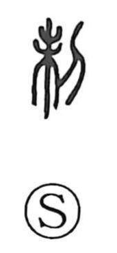

制

Uncategorized
Kun: | On: sei
system ・ regulation ・ control ・ restriction ・ to suppress ・ to make
Explanation
制 combines 未, the figure of a tree with luxuriant branches, with 刀, a blade. The graph pictures cutting back overgrown limbs, pruning and arranging growth as one would with scissors. From this image of trimming to bring things into order, the character comes to mean setting rules and standards, hence regulations and systems (as in 規制, 規定). By extension it expresses restraining and subduing, judging and enforcing (制圧, 制裁, 強制). Because 製 depicts cutting cloth to shape garments, 制 is also used in its place in the sense of making or producing.